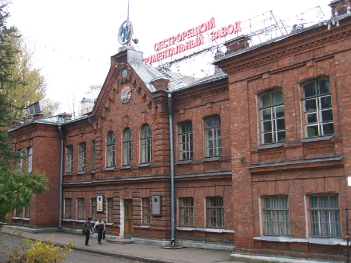
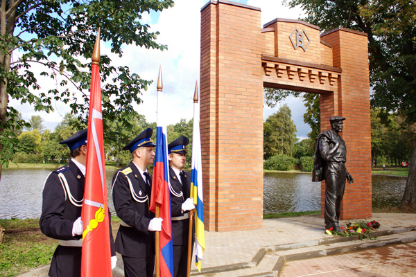

17 сентября 2011 года состоялось торжественное открытие скульптуры «Рабочему» в Курортном районе Санкт-Петербурга в городе Сестрорецке. Открытие было приурочено к 290-летию знаменитого Сестрорецкого инструментального (ранее оружейного) завода. Монумент является воплощением обобщенного образа рабочего человека, который трудился в стенах Сестрорецкого инструментального завода, простому человеку, без которого у России не было бы ни открытий, ни побед. Монумент был установлен по просьбе людей, которые всю жизнь проработали на заводе. Заводчане и администрация Курортного района надеются, что молодое поколение будет помнить историю своего города, чтить память людей, которые в трудное время «подняли» завод и тем самым оказали неоценимую помощь родному городу Сестрорецку и стране. К сожалению, в настоящее время завод переживает не лучшие времена, а ведь когда-то все было иначе…
Роль завода неоценима для города Сестрорецка и проживающих в нем людей. Ведь именно благодаря Сестрорецкому инструментальному заводу и появился в свое время сам город. Изначально завод строился как оружейный завод, так как русской армии требовалось новое высококачественное вооружение. Его строительство началось в 1721 году по Указу Петра I, а в январе 1724 года завод начал свою работу. Вскоре Сестрорецкий оружейный завод стал одним из крупнейших предприятий России. Именно на нем выпускалась гордость русского оружия — знаменитая трехлинейная винтовка Мосина. Сестрорецкие мастера были известны не только в России, но и за ее пределами. Помимо производства оружия, рабочими были сделаны часы для Петропавловского собора. Также на заводе некоторое время чеканились монеты.
19 ноября 1922 года по решению Главного управления военной промышленности был прекращен выпуск винтовок и началось изготовление только мерительного и металлорежущего инструмента. Еще в дореволюционные годы завод изготовлял для Ижевского и Тульского оружейных заводов и своих нужд точный мерительный инструмент и лекала, конструировались и изготовлялись станки для оружейного и инструментального производства. В 1923 году завод впервые стал выпускать и слесарно-монтажный инструмент, так необходимый для ленинградских заводов. Искусство сестрорецких инструментальщиков передавалось из поколения в поколение. Имя Воскова заводу было присвоено на торжественном заседании рабочих по случаю 5-й годовщины Октябрьской революции, тогда завод был еще оружейным.
19 ноября 1922 года по решению Главного управления военной промышленности был прекращен выпуск винтовок и началось изготовление только мерительного и металлорежущего инструмента. Еще в дореволюционные годы завод изготовлял для Ижевского и Тульского оружейных заводов и своих нужд точный мерительный инструмент и лекала, конструировал и делал станки для оружейного и инструментального производства. В 1923 году завод впервые стал выпускать и слесарно-монтажный инструмент, так необходимый для ленинградских заводов. Искусство сестрорецких инструментальщиков передавалось из поколения в поколение. Имя Воскова заводу было присвоено на торжественном заседании рабочих по случаю 5-й годовщины Октябрьской революции, тогда завод был еще оружейным.
К середине 20-х годов XX века Сестрорецкий инструментальный завод имени Воскова прочно завоевал рынок. Изготовленный сестрорецкими умельцами инструмент, особенно штангенциркули и калибры, были не хуже, а часто лучше заграничных. Продукцию завода составляли инструменты и станки для инструментальной промышленности.
В годы первых пятилеток сильно повысился спрос на продукцию завода, так как бурно развивалась промышленность, для которой необходимы станки и инструмент. Создавались хозрасчетные бригады, росло рационализаторское движение. Трудовой подъем был настолько велик, что свою первую пятилетку завод выполнил за 2,5 года. Развивалось на заводе и стахановское движение, увеличивался ассортимент продукции и повышалась ее сложность. Только в одном 1938 году завод освоил и выпустил около 500 совершенно новых изделий и инструмента.
Но мирный труд в 1941 году был прерван войной. Станки, оборудование и работники были эвакуированы в Новосибирск. Но все вывезти из Сестрорецка не удалось, так как Ленинград оказался в кольце блокады. Оставшиеся станки на автомашинах и по железной дороге были вывезены в Ленинград на заводы «Красный инструментальщик» и «Электроаппарат». И снова инструментальщики стали выпускать оружие. Работали в очень трудных условиях в осажденном городе, но, как сказал маршал Л.А.Говоров, «ковали оружие Победы». «С этим оружием в руках, — писал маршал восковцам после победы, — воины-ленинградцы прорвали зимой 1943 года блокаду Ленинграда, окончательно сняли осаду в 1944 году. Ленинградские полки и дивизии со славой пронесли свои боевые знамена до Берлина и Порт-Артура».
22 февраля 1945 года Совет Народных Комиссаров СССР принял специальное постановление о восстановлении Сестрорецкого инструментального завода имени Воскова в Сестрорецке, который должен был быть возрожден как завод режущего, главным образом, стандартного инструмента, с отдельным цехом специального режущего инструмента и цехом специальных станков для нужд инструментальной промышленности. Для выполнения этого постановления нужно было восстановить производственные площади, завезти и сделать монтаж оборудования. Не хватало рабочих рук, так как вернулись в Сестрорецк немногие. Восстанавливали завод 150 человек. К концу 1945 года работали более 300 человек, и часть из них непосредственно занималась выпуском продукции.
В первые послевоенные годы завод работал в очень трудных условиях. Тяжело было с рабочими кадрами, с жильем, не хватало материалов для производства. Однако уже к концу 1946 года полностью восстановили 11 цехов. Работали на энтузиазме. Средством мобилизации рабочих было социалистическое соревнование и движение новаторов.
С начала 50-х годов прошлого века около 70 заводов страны получали с Сестрорецкого завода нестандартный инструмент.
В 60-е — 80-е годы завод был одним из ведущих предприятий Министерства станкоинструментальной промышленности. Не единожды он занимал призовые места в социалистическом соревновании заводов Министерства. Если в 1920 году было изготовлено 2000 простейших спиральных сверл, то в середине восьмидесятых годов только перечень одних наименований инструмента значительно превосходил эту цифру. Славу завода составляли поколения сестрорецких инструментальщиков.
О наградах завода, о самоотверженном труде его работников рассказывают мемориальные доски на здании заводоуправления и экспонаты заводского музея — орден Октябрьской революции, Памятное знамя ЦК КПСС и Президиума Верховного Совета СССР, юбилейная медаль в честь 100-летия со дня рождения В.И. Ленина, Ленинская грамота, дипломы ВДНХ.
Это надо беречь! Этим надо гордиться!
В результате перестройки завод, как и подавляющее большинство предприятий, переживал кризис. Нашлись люди, которые стали торговать национальным достоянием, и работа на заводе Воскова, как и на многих заводах и фабриках, была остановлена, и затем он был куплен иностранцами.
С 2004 года единственным производителем инструмента под широко известной торговой маркой Сестрорецкого инструментального завода являлась компания ЗАО «СИЗ Пром».
В 2004 году на заводе начата якобы реконструкция, проводимая будто бы с целью создания компактного производства инструментов. Говорилось об освобождении помещений под экологически чистые производства.
Некоторые освобождаемые объекты планируется переоборудовать под социально-культурные организации, часть зданий переоборудуется под жилые помещения. На территории общей площадью больше 13 гектаров планируется построить жилые дома, школы, магазины, рестораны и кафе. Осуществление проекта начато в 2008 году, а конкурсные торги по этому проекту выиграла компания «Запад-Ф». Работы по перебазированию завода на новую территорию поручено провести компании Sestra River Developments. По этому плану, к 2012 году планируется убрать завод из Сестрорецка, перебазировав Сестрорецкий инструментальный завод, а точнее то, что от него осталось, на территорию в Конной Лахте. Но даже при социализме план не был догмой. Лучше бы оставить завод там, где стоит его Рабочий, и сделать его государственным предприятием. Ведь это гордость России.